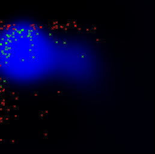
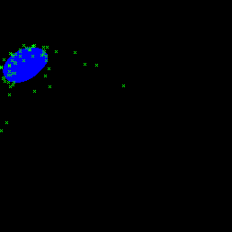

Current version: 0.3 Developer(s): Renato De Giovanni in collaboration with Ana Carolina Lorena
Accepts categorical maps: no Needs absence points: no
Author(s): Vladimir N. Vapnik
1) Vapnik, V. (1995) The Nature of Statistical Learning Theory. SpringerVerlag. 2) Schölkopf, B., Smola, A., Williamson, R. and Bartlett, P.L.(2000). New support vector algorithms. Neural Computation, 12, 1207-1245. 3) Schölkopf, B., Platt, J.C., Shawe-Taylor, J., Smola A.J. and Williamson, R.C. (2001). Estimating the support of a high-dimensional distribution. Neural Computation, 13, 1443-1471. 4) Cristianini, N. & Shawe-Taylor, J. (2000). An Introduction to Support Vector Machines and other kernel-based learning methods. Cambridge University Press.
Support vector machines map input vectors to a higher dimensional space where a maximal separating hyperplane is constructed. Two parallel hyperplanes are constructed on each side of the hyperplane that separates the data. The separating hyperplane is the hyperplane that maximises the distance between the two parallel hyperplanes. An assumption is made that the larger the margin or distance between these parallel hyperplanes the better the generalisation error of the classifier will be. The model produced by support vector classification only depends on a subset of the training data, because the cost function for building the model does not care about training points that lie beyond the margin. Content retrieved from Wikipedia on the 13th of June, 2007.
Parameters (8):
Data type: Integer Domain: 0, Typical value: 0
Meaning: Type of SVM: 0 = C-SVC, 1 = Nu-SVC, 2 = one-class SVM
Data type: Integer Domain: 0, Typical value: 2
Meaning: Type of kernel function: 0 = linear: u'*v , 1 = polynomial: (gamma*u'*v + coef0)^degree , 2 = radial basis function: exp(-gamma*|u-v|^2)
Data type: Integer Domain: [0, oo) Typical value: 3
Meaning: Degree in kernel function (only for polynomial kernels).
Data type: Double Domain: (oo, oo) Typical value: 0
Meaning: Gamma in kernel function (only for polynomial and radial basis kernels). When set to zero, the default value will actually be 1/k, where k is the number of layers.
Data type: Double Domain: (oo, oo) Typical value: 0
Meaning: Coef0 in kernel function (only for polynomial kernels).
Data type: Double Domain: [0.001, oo) Typical value: 1
Meaning: Cost (only for C-SVC types).
Data type: Double Domain: 0.001, Typical value: 0.5
Meaning: Nu (only for Nu-SVC).
Data type: Integer Domain: 0, Typical value: 1
Meaning: Indicates if the output should be a probability instead of a binary response (only available for C-SVC and Nu-SVC).
The following images show two models in the environmental space (temperature x precipitation) generated with the same presence points (Furcata boliviana localities dataset) but with different parameters. Since SVM C-SVC needs absence points, the first model included a set of pseudo-absence points that were randomly generated in areas (environmental space) distant from the presence points:
|  |
| fig. 1: SVM C-SVC with default parameters. Pseudo-absence points are displayed in red |
|  |
| fig. 2: SVM one-class |